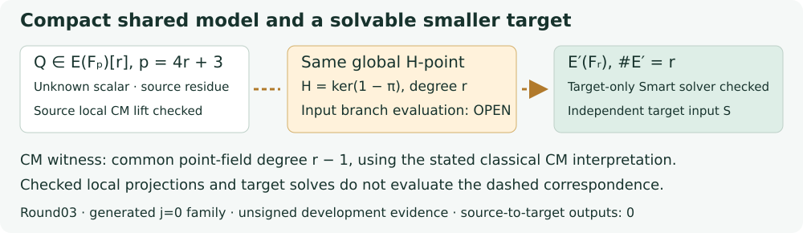
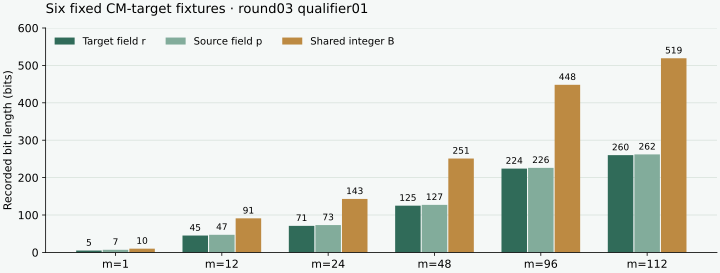

16 November 2026 — round three
Six fixed development fixtures now have a compact shared integer model, a source of order4r over Fp with p=4r+3, and an anomalous target of order r over the smaller field Fr. A classical Smart solver recovers target-only scalars and OpenSSL replays each answer. Unsigned native claim PCC-20261116-99cae8. These are generated j=0 curves. [pcc:unverified]

Put u=d·2^m+1, b=2u−1, r=3u(u−1)+1. In Q(omega), omega²+omega+1=0, pi=u+b·omega has norm r and trace1; alpha=1+2(1−pi) has norm p and trace4. Choose the two sextic twists and an ordinary integer coefficient B by CRT. The common model is y²=x³+B. The cover [1−pi] has proposed kernel H of order r, with injective reductions at the selected source and target primes under the classical CM interpretation.

All six declared bins complete, with subgroup sizes5,45,71,125,224,260 bits and source sizes7,47,73,127,226,262 bits. The largest B has519 bits. No native bin is omitted, empty or timed out. This records correctness and representation sizes, not scaling or performance evidence. [pcc:unverified]
Each fixture has an auxiliary good split prime ell≤257 whose computed CM Frobenius eigenvalue on H has exact order r−1. Exact small-field counts and the full factorization of r−1 qualify the witness. Under the stated CM identification, the Galois image is F_r^×, so every nonzero H-point generates the same cyclic point field of degree r−1. The native witness is arithmetic evidence; the full CM-to-Galois bridge is a written argument. [pcc:unverified]
Fixed primes in that field define abstract scalar-preserving reductions. The required evaluator must take an arbitrary encoded source Q and return the residue of its same H-point at the target prime. The program does not perform this operation: source-to-target outputs are0. Independent local root checks do not select a common global point (CT124). Dense degree is not itself a lower bound on compressed evaluation.
Smart’s classical map uses an r² lift and the formal parameter lambda(P)=((-XZ/Y mod r²)/r) mod r of [r]P. It recovers k as a ratio of target lambdas, without a supplied target scalar. The canonical j=0 lift gives lambda=0 on all42 tested target inputs. The declared noncanonical lift a4=r, a6=B gives a nonzero generator lambda in every case. OpenSSL checks all24 public target answers and rejects k+1. Target addition also respects lambda. [pcc:unverified]
One source/target CM contraction at p²/r² passes84 local projection checks. There are42 checked points per side: four public inputs per bin and18 small-fixture auditor points. Public source points remain unmapped. Native Pocklington and elliptic primality witness arithmetic is retained; it is not a formally proved primality checker. [pcc:unverified]
Nine named Lean endpoints apply Mathlib norm/ring laws to the actual small and large parameters, small orientations and two exact polynomial identities. The unchanged proof gate audits33 theorems with zero trusted native exceptions; explicit axioms use standard foundations. The endpoints do not formalize CM Galois theory, the native solver or a transfer evaluator. All nine claim IDs and statement bindings are in lean-claims-01.json; standing is unsigned. [pcc:unverified]
Failed compiler/preparation attempts, immutable qualifiers and distinct pre/post manifests are retained. No performance experiment, cloud spend, independent execution proof or novelty claim. KB, Conductor and Cargo are unavailable. Original round02 inputs and migrated PNGs are preserved. PR4388 is merged and its monitor stopped; its external published-ledger prefix discrepancy is recorded without repairing history. [pcc:unverified]
Next: evaluate the oriented common-field branch from Q, with source-relation and chimera controls and complete field/selection/solve costs. Applicability to arbitrary prime-field curves remains open.
Evidence: full result and proof map, protocol and source links, raw receipts. Primary sources: Leprévost et al., Generating Anomalous Elliptic Curves, §§2–4; Morain (1991), primality criteria; Galbraith, chapter25, isogenies. Editable SVGs and recorded-data plot source accompany this report.